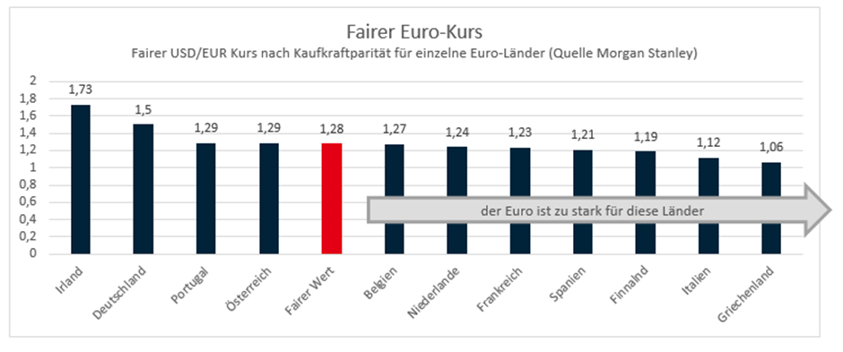

Geographie | Klasse 10
Die Handelsbilanz vergleicht den Wert der Warenexporte und Warenimporte eines Landes. Ein Überschuss bedeutet: Das Land verkauft mehr Waren ins Ausland, als es von dort kauft. Ein Defizit bedeutet: Das Land kauft mehr Waren aus dem Ausland, als es verkauft.
Merksatz: Handelsbilanzsalden sind keine „Punktestände“. Ein dauerhafter Überschuss eines Landes bedeutet spiegelbildlich, dass andere Länder Defizite oder Schulden aufbauen müssen.
Stark vereinfachtes Modell: Ein Überschussland wertet auf, ein Defizitland wertet ab. Dadurch verändern sich Preise und Handelsströme.
Hinweis: Die Zahlen sind ein didaktisches Rechenmodell, keine historischen Wechselkurse.
Problemkern: Der Euro beseitigt Wechselkursrisiken im Binnenmarkt – aber auch einen wichtigen Anpassungsmechanismus zwischen ungleichen Volkswirtschaften.
Saldo des Warenhandels in Milliarden Euro. Positive Werte = Warenexportüberschuss, negative Werte = Warenimportüberschuss.
Quelle: Eurostat, Balance of payments statistics, Werte für 2024. Warenbilanz ist nur ein Teil der Leistungsbilanz.
| Bereich | + Chancen | − Herausforderungen bei Ungleichgewichten |
|---|---|---|
| Alltag & Reisen | Kein Geldwechsel, keine Umtauschgebühren, Preise lassen sich im Euro-Raum leichter vergleichen. | Preisunterschiede zwischen Regionen bleiben trotzdem bestehen; gleiche Währung bedeutet nicht gleiche Kaufkraft. |
| Unternehmen | Planungssicherheit: Lieferverträge im Euro-Raum sind nicht mehr von Wechselkursschwankungen zwischen Mitgliedstaaten abhängig. | Unternehmen in schwächeren Regionen können ihre Wettbewerbsfähigkeit nicht durch eine nationale Abwertung verbessern. |
| Handel | Der Euro stärkt grenzüberschreitende Lieferketten und senkt Transaktionskosten im Binnenmarkt. | Exportstarke Länder können dauerhaft Überschüsse aufbauen; Defizitländer müssen sich anpassen oder finanzieren. |
| Geldpolitik | Eine gemeinsame Zentralbank kann Preisstabilität für den gesamten Euro-Raum verfolgen. | Ein Zinssatz passt nie perfekt zu allen Ländern: Boomregionen und Krisenregionen brauchen oft unterschiedliche Impulse. |
| Raumstruktur | Der Euro macht Europa als Wirtschaftsraum enger vernetzt und erleichtert Standortentscheidungen über Grenzen hinweg. | Starke Zentren können Kapital und Fachkräfte stärker anziehen; periphere Regionen geraten unter Anpassungsdruck. |
Transfergedanke: Ohne Wechselkursausgleich wird Anpassung politischer: Wer trägt die Kosten – Defizitländer, Überschussländer oder die Euro-Zone gemeinsam?
